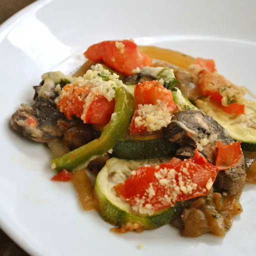

Ratatouille

Description
This recipe is one that my Aunt Deby taught me how to make from her Italian family.
It utilizes fresh late summer vegetables, such as tomato, squash, and bell pepper.
This recipe was popularized in my generation by the Disney movie, Ratatouille.
Canonically, a rat named Remy becomes a secret head chef at a has-been fine-dining restaurant.

Ingredients
- 2 tablespoons olive oil, divided
- 3 cloves garlic, minced
- 1 eggplant, cut into ½-inch cubes
- 2 teaspoons dried parsley
- salt to taste
- 1 cup grated Parmesan cheese
- 2 zucchini, sliced
- 2 large tomatoes, chopped
- 2 cups sliced fresh mushrooms
- 1 large onion, sliced into rings
- 1 green or red bell pepper, sliced
Steps
- Preheat the oven to 350 degrees F (175 degrees C).
Coat the bottom and sides of a 1 ½-quart casserole dish with 1 tablespoon olive oil.
- Heat remaining 1 tablespoon olive oil in a medium skillet over medium heat.
Cook and stir garlic until fragrant and golden brown.
Add eggplant and parsley; cook and stir until eggplant is tender and soft, about 10 minutes.
Season with salt to taste.
- Spread eggplant mixture evenly across the bottom of the prepared casserole dish;
sprinkle with a few tablespoons of Parmesan cheese.
Spread zucchini in an even layer over top.
Lightly salt and sprinkle with a little more cheese.
Continue layering in this fashion, with tomatoes, mushrooms, onion, and bell pepper,
covering each layer with a sprinkling of salt and cheese.
- Bake in preheated oven until vegetables are tender, about 45 minutes.
Source Recipe: AllRecipes
Home